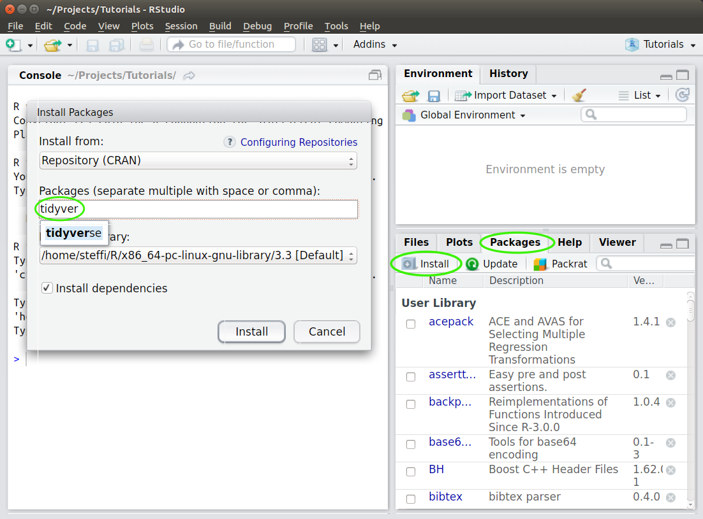

Intro to R Through Figures
Welcome!
I’m excited for the opportunity to share my love of R with you through this workshop. This site should give you all the details you need to get you ready to participate.
Date: Tuesday Nov 23rd 2021
Time: 2:30 - 5:00 pm (Pacific)
Where: Zoom (see UNBC Applied Analysis Hub email)
We are going to be covering a lot in this workshop, so to give us a jump start, I’ve compiled some things you should have done before hand:
IMPORTANT!:
If you have any problems installing the software or packages, please contact me before hand so we can sort out any problems
Instructions
1. Install R (Update R)
Even if you already have R installed, please update it, so we’re all working with the same version
Depending on your operating system, you can install R in one of the following ways:
Windows
- Go to the Windows download page: https://cran.r-project.org/bin/windows/base/
- Download and install R for windows (the link at the top)
Mac
- Go to the Mac OS X download page: https://cran.r-project.org/bin/macosx/
- Download and install the version that matches your Mac OS X
Linux: Debian/Ubuntu
- Specific details: https://cran.r-project.org/bin/linux/ubuntu/README.html
- Add one of the CRAN repositories to you apt (otherwise your R will be out of date)
2. Install RStudio
Even if you already have RStudio installed, please update it, so we’re all working with the same version
- For all Operating systems (i.e., Windows, Mac Os, Linux, etc.) go to RStudio’s download page: https://www.rstudio.com/products/rstudio/download/#download
- Download and install the installer that matches your system (i.e. select your link from the top options, not the Zip/Tarball options)
Open RStudio  not R
not R  . RStudio automatically opens R for you in the ‘Console’ pane
. RStudio automatically opens R for you in the ‘Console’ pane
Verify that your version of R by looking at the first line of the console (left or lower left pane), you should see something like this:
## R version 4.1.2 (2021-11-01) -- Bird Hippie
## Copyright (C) 2021 The R Foundation for Statistical Computing
## Platform: x86_64-pc-linux-gnu (64-bit)
##
## R is free software and comes with ABSOLUTELY NO WARRANTY.
## You are welcome to redistribute it under certain conditions.
## Type 'license()' or 'licence()' for distribution details.
##
## Natural language support but running in an English locale
##
## R is a collaborative project with many contributors.
## Type 'contributors()' for more information and
## 'citation()' on how to cite R or R packages in publications.
##
## Type 'demo()' for some demos, 'help()' for on-line help, or
## 'help.start()' for an HTML browser interface to help.
## Type 'q()' to quit R.The important line is the first one: R version 4.1.2 (2021-11-01) – Bird Hippie
3. Install packages
Packages are extensions or add-ons for R. You will use many different ones over the course of your work with R.
You are going to install the ggplot2, patchwork, and palmerpenguins packages
With code:
Type in the following and hit enter
install.packages(c("ggplot2", "patchwork", "palmerpenguins"))OR
With Menus:
- Click on the ‘Packages’ tab in the lower right hand corner
- Click on the ‘Install’ button right below the tab
- Type ‘ggplot2’ into the ‘Packages’ box, and click on ‘Install’ (repeat for the other packages)

- This may take a while (you will see lots of download text in red in your console)
- When it’s finished, you should see a message similar this one to in the console (lower left hand pane)
* DONE (ggplot2)
The downloaded source packages are in
‘/tmp/RtmpACWq9S/downloaded_packages’
> - Test that your installation had no problems by typing
library(ggplot2)into the console and hitting enter. You should just get a prompt (“>”) with no messages.
> library(ggplot2)
> Problems?
- If you already had R/RStudio installed, try removing them both and installing everything from scratch
- If you get an error about a problem installing a specific package, try installing that package invidiually (search for it in the install packages menu)
- Contact Steffi
Congratulations! Now you’re ready to get into the fun stuff :)
Updated 2021-11-18 11:13:15 CST